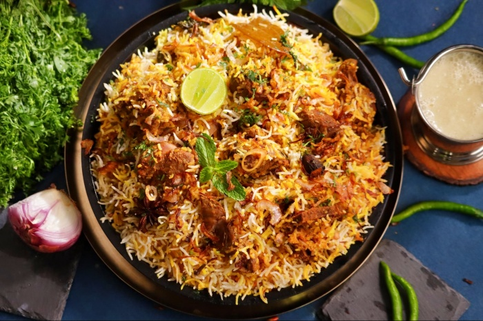

Hyderabadi Biryani

Ingredients
- 500g Basmati Rice
- 1kg Marinated Chicken/Meat
- Fried Onions (Birista)
- Saffron Milk & Whole Spices
Step-by-Step Instructions
- Parboil the rice with whole spices until 70% cooked.
- Layer the marinated meat at the bottom of a heavy pot.
- Add the rice, fried onions, and saffron milk in layers.
- Seal the pot and cook on low heat (Dum) for 45 minutes.